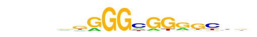

| p-value: | 1e-10 |
| log p-value: | -2.458e+01 |
| Information Content per bp: | 1.742 |
| Number of Target Sequences with motif | 39.0 |
| Percentage of Target Sequences with motif | 2.27% |
| Number of Background Sequences with motif | 286.3 |
| Percentage of Background Sequences with motif | 0.63% |
| Average Position of motif in Targets | 58.9 +/- 23.4bp |
| Average Position of motif in Background | 51.7 +/- 30.3bp |
| Strand Bias (log2 ratio + to - strand density) | 10.0 |
| Multiplicity (# of sites on avg that occur together) | 1.03 |
| Motif File: | file (matrix)
reverse opposite |
| PDF Format Logos: | forward logo
reverse opposite |
MA0193.1_Lag1/Jaspar
| Match Rank: | 1 |
| Score: | 0.66
| | Offset: | 2
| | Orientation: | forward strand |
| Alignment: | ATCTCCCA-
--CTACCAA |
|

|
|
Su(H)/dmmpmm(Bergman)/fly
| Match Rank: | 2 |
| Score: | 0.65
| | Offset: | 2
| | Orientation: | reverse strand |
| Alignment: | ATCTCCCA-
--CTCCCAC |
|

|
|
POL013.1_MED-1/Jaspar
| Match Rank: | 3 |
| Score: | 0.62
| | Offset: | 1
| | Orientation: | forward strand |
| Alignment: | ATCTCCCA
-GCTCCG- |
|


|
|
Su(H)/dmmpmm(Papatsenko)/fly
| Match Rank: | 4 |
| Score: | 0.57
| | Offset: | 1
| | Orientation: | reverse strand |
| Alignment: | ATCTCCCA--
-GTTCCCACG |
|
|
|
hkb/dmmpmm(Papatsenko)/fly
| Match Rank: | 5 |
| Score: | 0.55
| | Offset: | -1
| | Orientation: | reverse strand |
| Alignment: | -ATCTCCCA
CAACGCCCA |
|
|
|
POL008.1_DCE_S_I/Jaspar
| Match Rank: | 6 |
| Score: | 0.52
| | Offset: | 1
| | Orientation: | forward strand |
| Alignment: | ATCTCCCA
-GCTTCC- |
|
|
|
MA0085.1_Su(H)/Jaspar
| Match Rank: | 7 |
| Score: | 0.51
| | Offset: | -5
| | Orientation: | reverse strand |
| Alignment: | -----ATCTCCCA---
ATCTCGGTTCCCACAN |
|
|
|
Unknown4/Drosophila-Promoters/Homer
| Match Rank: | 8 |
| Score: | 0.51
| | Offset: | -2
| | Orientation: | forward strand |
| Alignment: | --ATCTCCCA--
AAAAATACCRMA |
|
|
|
Deaf1/dmmpmm(Pollard)/fly
| Match Rank: | 9 |
| Score: | 0.50
| | Offset: | 3
| | Orientation: | reverse strand |
| Alignment: | ATCTCCCA-
---CACGAA |
|
|
|
MA0185.1_Deaf1/Jaspar
| Match Rank: | 10 |
| Score: | 0.50
| | Offset: | 3
| | Orientation: | reverse strand |
| Alignment: | ATCTCCCA-
---CACGAA |
|
|
|